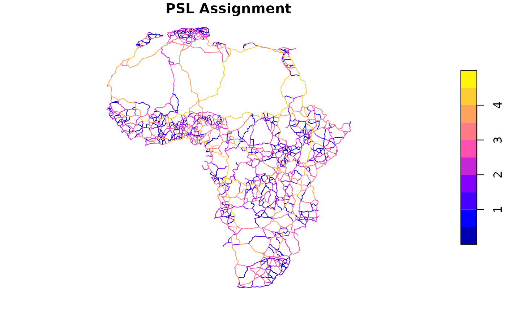
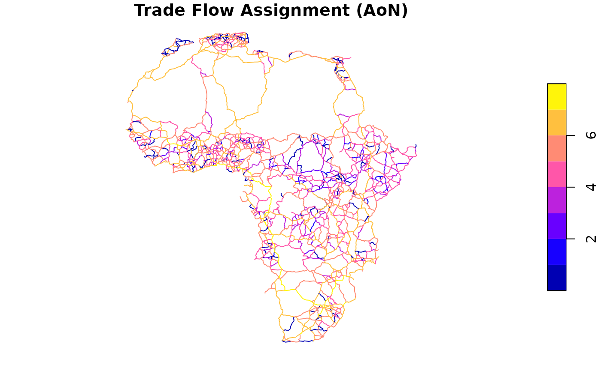

Assign traffic flows to network edges using either Path-Sized Logit (PSL) or All-or-Nothing (AoN) assignment methods.
Usage
run_assignment(
graph_df,
od_matrix_long,
directed = FALSE,
cost.column = "cost",
method = c("PSL", "AoN"),
beta = 1,
...,
detour.max = 1.5,
angle.max = 90,
unique.cost = TRUE,
npaths.max = Inf,
dmat.max.size = 10000^2,
return.extra = NULL,
verbose = TRUE,
nthreads = 1L
)
# S3 method for class 'flownet'
print(x, ...)Arguments
- graph_df
A data.frame with columns
from,to, and optionally a cost column. Represents the network graph with edges between nodes.- od_matrix_long
A data.frame with columns
from,to, andflow. Represents the origin-destination matrix in long format with flow values.- directed
Logical (default: FALSE). Whether the graph is directed.
- cost.column
Character string (default: "cost") or numeric vector. Name of the cost column in
graph_df, or a numeric vector of edge costs with length equal tonrow(graph_df). The cost values are used to compute shortest paths and determine route probabilities.- method
Character string (default: "PSL"). Assignment method:
"PSL": Path-Sized Logit model considering multiple routes with overlap correction"AoN": All-or-Nothing assignment, assigns all flow to the shortest path (faster but no route alternatives)
- beta
Numeric (default: 1). Path-sized logit parameter (beta_PSL). Only used for PSL method.
- ...
Additional arguments (currently ignored).
- detour.max
Numeric (default: 1.5). Maximum detour factor for alternative routes (applied to shortest paths cost). Only used for PSL method. This is a key parameter controlling the execution time of the algorithm: considering more routes (higher
detour.max) substantially increases computation time.- angle.max
Numeric (default: 90). Maximum detour angle (in degrees, two sided). Only used for PSL method. I.e., nodes not within this angle measured against a straight line from origin to destination node will not be considered for detours.
- unique.cost
Logical (default: TRUE). Deduplicates paths based on the total cost prior to generating them. Only used for PSL method. Since multiple 'intermediate nodes' may be on the same path, there is likely a significant number of duplicate paths which this option removes.
- npaths.max
Integer (default: Inf). Maximum number of paths to compute per OD-pair. Only used for PSL method. If the number of paths exceeds this number, a random sample will be taken from all but the shortest path.
- dmat.max.size
Integer (default: 1e4^2). Maximum size of distance matrices (both shortest paths and geodesic) to precompute. If smaller than
n_nodes^2, then the full matrix is precomputed. Otherwise, it is computed in chunks as needed, where each chunk hasdmat.max.sizeelements. Only used for PSL method.- return.extra
Character vector specifying additional results to return. Use
"all"to return all available extras for the selected method.Option PSL AoN Description "graph"Yes Yes The igraph graph object "paths"Yes Yes PSL: list of lists of edge indices (multiple routes per OD); AoN: list of edge index vectors (one path per OD) "edges"Yes No List of edge indices used for each OD pair "counts"Yes Yes PSL: list of edge visit counts per OD; AoN: integer vector of global edge traversal counts "costs"Yes Yes PSL: list of path costs per OD; AoN: numeric vector of shortest path costs "weights"Yes No List of path weights (probabilities) for each OD pair - verbose
Logical (default: TRUE). Show progress bar and intermediate steps completion status?
- nthreads
Integer (default: 1L). Number of threads (daemons) to use for parallel processing with
mirai. Should not exceed the number of logical processors.- x
An object of class
flownet, typically returned byrun_assignment.
Value
A list of class "flownet" containing:
call- The function callfinal_flows- Numeric vector of assigned flows for each edge (same length asnrow(graph_df))od_pairs_used- Indices of OD pairs with valid flowsAdditional elements as specified in
return.extra:graph- The igraph graph objectpaths- For PSL: list of lists of edge indices (multiple routes per OD pair); for AoN: list of edge index vectors (one shortest path per OD pair)edges- List of edge indices used for each OD pair (PSL only)edge_counts- For PSL: list of edge visit counts per OD pair; for AoN: integer vector of global edge traversal countspath_costs- For PSL: list of path costs per OD pair; for AoN: numeric vector of shortest path costspath_weights- List of path weights (probabilities) for each OD pair (PSL only)
Details
This function performs traffic assignment using one of two methods: All-or-Nothing (AoN) is fast but assigns all flow to a single shortest path; Path-Sized Logit (PSL) considers multiple routes with overlap correction for more realistic flow distribution.
All-or-Nothing (AoN) Method
A simple assignment method that assigns all flow from each OD pair to the single shortest path.
This is much faster than PSL but does not consider route alternatives or overlaps.
Parameters detour.max, angle.max, unique.cost, npaths.max,
beta, and dmat.max.size are ignored for AoN.
Path-Sized Logit (PSL) Method
A more sophisticated assignment method that considers multiple alternative routes and
accounts for route overlap when assigning flows. The PSL model adjusts choice probabilities
based on how much each route overlaps with other alternatives, preventing overestimation
of flow on shared segments. The beta parameter controls the sensitivity to overlap.
PSL Model Formulation
The probability \(P_k\) of choosing route \(k\) from the set of alternatives \(K\) is:
$$P_k = \frac{e^{V_k}}{\sum_{j \in K} e^{V_j}}$$
where the utility \(V_k\) is defined as:
$$V_k = -C_k + \beta_{PSL} \ln(PS_k)$$
Here \(C_k\) is the generalized cost of route \(k\), \(\beta_{PSL}\) is the
path-size parameter (the beta argument), and \(PS_k\) is the path-size factor.
The path-size factor quantifies route uniqueness: $$PS_k = \frac{1}{C_k} \sum_{a \in \Gamma_k} \frac{c_a}{\delta_a}$$ where \(\Gamma_k\) is the set of edges in path \(k\), \(c_a\) is the cost of edge \(a\), and \(\delta_a\) is the number of alternative routes using edge \(a\).
If a path is unique (\(\delta_a = 1\) for all edges), then \(PS_k = 1\) and the
model reduces to standard MNL. For overlapping routes, \(PS_k < 1\) and
\(\ln(PS_k) < 0\), so a positive beta penalizes overlap. Higher beta
values strengthen penalization; beta = 0 gives standard MNL behavior.
For more information about the PSL model consult some of the references below.
Route Enumeration Algorithm
For each origin-destination pair, the algorithm identifies alternative routes as follows:
Compute the shortest path cost from origin to destination.
For each potential intermediate node, calculate the total cost of going origin -> intermediate -> destination.
Keep only routes where total cost is within
detour.maxtimes the shortest path cost.If
angle.maxis specified, filter to intermediate nodes that lie roughly in the direction of the destination (within the specified angle).If
unique.cost = TRUE, remove duplicate routes based on total cost.Compute the actual paths and filter out those with duplicate edges (where the intermediate node is approached and departed via the same edge).
This pre-selection using distance matrices speeds up route enumeration considerably by avoiding computation of implausible paths.
Coordinate-Based Filtering
When angle.max is specified and graph_df contains coordinate columns
(FX, FY, TX, TY), the function uses geographic distance
calculations to restrict detours. Only intermediate nodes that are (a) closer to the
origin than the destination is, and (b) within the specified angle from the
origin-destination line are considered. This improves both computational efficiency
and route realism by excluding geographically implausible detours.
References
Ben-Akiva, M., & Bierlaire, M. (1999). Discrete choice methods and their applications to short term travel decisions. In R. W. Hall (Ed.), Handbook of Transportation Science (pp. 5-33). Springer US. doi:10.1007/978-1-4615-5203-1_2
Cascetta, E. (2001). Transportation systems engineering: Theory and methods. Springer.
Ben-Akiva, M., & Lerman, S. R. (1985). Discrete choice analysis: Theory and application to travel demand. The MIT Press.
Ramming, M. S. (2002). Network knowledge and route choice (Doctoral dissertation). Massachusetts Institute of Technology.
Prato, C. G. (2009). Route choice modeling: Past, present and future research directions. Journal of Choice Modelling, 2(1), 65-100. doi:10.1016/S1755-5345(13)70005-8
AequilibiaE Python Documentation: https://www.aequilibrae.com/develop/python/route_choice/path_size_logit.html
Examples
library(flownet)
library(collapse)
#> collapse 2.1.6, see ?`collapse-package` or ?`collapse-documentation`
#>
#> Attaching package: ‘collapse’
#> The following object is masked from ‘package:stats’:
#>
#> D
library(sf)
# Load existing network edges (exclude proposed new links)
africa_net <- africa_network[!africa_network$add, ]
# Convert to graph (use atomic_elem to drop sf geometry, qDF for data.frame)
graph <- atomic_elem(africa_net) |> qDF()
nodes <- nodes_from_graph(graph, sf = TRUE)
# Map cities/ports to nearest network nodes
nearest_nodes <- nodes$node[st_nearest_feature(africa_cities_ports, nodes)]
# Simple gravity-based OD matrix
od_mat <- outer(africa_cities_ports$population, africa_cities_ports$population) / 1e12
dimnames(od_mat) <- list(nearest_nodes, nearest_nodes)
od_matrix_long <- melt_od_matrix(od_mat)
# Run Traffic Assignment (All-or-Nothing method)
result_aon <- run_assignment(graph, od_matrix_long, cost.column = "duration",
method = "AoN", return.extra = "all")
#> Created graph with 1379 nodes and 2344 edges...
#> 495 OD-pairs have zero or non-finite flow values and will be skipped...
print(result_aon)
#> FlowNet object
#> Call: run_assignment(graph_df = graph, od_matrix_long = od_matrix_long, cost.column = "duration", method = "AoN", return.extra = "all")
#>
#> Number of nodes: 1379
#> Number of edges: 2344
#> Number of simulations/OD-pairs: 204714
#>
#> Average path length in edges (SD): 34.99213 (19.56615)
#> Average number of visits per edge (SD): 3056.049 (5875.129)
#> Average path cost (SD): 4345.631 (2253.376)
#>
#> Final flows summary statistics:
#> N Ndist Mean SD Min Max Skew Kurt
#> 2344 2017 2187.89 4553.86 0 37250.26 3.49 18.49
#> 1% 5% 10% 25% 50% 75% 90% 95% 99%
#> 0 0 1.08 36.57 295.39 1662.86 7581 11386.38 20188.24
# \donttest{
# Run Traffic Assignment (Path-Sized Logit method)
# Note: PSL is slower but produces more realistic flow distribution
result_psl <- run_assignment(graph, od_matrix_long, cost.column = "duration",
method = "PSL", nthreads = 1L,
return.extra = c("edges", "counts", "costs", "weights"))
#> Created graph with 1379 nodes and 2344 edges...
#> Computed distance matrix of dimensions 1379 x 1379 ...
#> 495 OD-pairs have zero or non-finite flow values and will be skipped...
print(result_psl)
#> FlowNet object
#> Call: run_assignment(graph_df = graph, od_matrix_long = od_matrix_long, cost.column = "duration", method = "PSL", return.extra = c("edges", "counts", "costs", "weights"), nthreads = 1L)
#>
#> Number of edges: 2344
#> Number of simulations/OD-pairs: 204714
#>
#> Average number of edges utilized per simulation (SD): 561.081 (435.3152)
#> Average number of visits per edge (SD): 11.62403 (23.3552)
#> Average path cost (SD): 5019.838 (554.6268)
#> Average path weight (SD): 0.0293314 (0.0879165)
#>
#> Final flows summary statistics:
#> N Ndist Mean SD Min Max Skew Kurt
#> 2344 2259 2188.73 4541.72 0 37246.92 3.48 18.43
#> 1% 5% 10% 25% 50% 75% 90% 95% 99%
#> 0 0.05 1.62 39.28 301.48 1677.97 7573.77 11419.34 19460.79
# Visualize AoN Results
africa_net$final_flows_log10 <- log10(result_psl$final_flows + 1)
plot(africa_net["final_flows_log10"], main = "PSL Assignment")

# }
# --- Trade Flow Disaggregation Example ---
# Disaggregate country-level trade to city-level using population shares
# Compute each city's share of its country's population
city_pop <- africa_cities_ports |> atomic_elem() |> qDF() |>
fcompute(node = nearest_nodes,
city = qF(city_country),
pop_share = fsum(population, iso3, TRA = "/"),
keep = "iso3")
# Aggregate trade to country-country level and disaggregate to cities
trade_agg <- africa_trade |> collap(quantity ~ iso3_o + iso3_d, fsum)
od_matrix_trade <- trade_agg |>
join(city_pop |> add_stub("_o", FALSE), multiple = TRUE) |>
join(city_pop |> add_stub("_d", FALSE), multiple = TRUE) |>
fmutate(flow = quantity * pop_share_o * pop_share_d) |>
frename(from = node_o, to = node_d) |>
fsubset(flow > 0 & from != to)
#> left join: trade_agg[iso3_o] 1971/1971 (100%) <41.94:9.62> y[iso3_o] 452/453 (99.8%)
#> left join: x[iso3_d] 19685/19685 (100%) <418.83:9.62> y[iso3_d] 452/453 (99.8%)
# Run AoN assignment with trade flows
result_trade_aon <- run_assignment(graph, od_matrix_trade, cost.column = "duration",
method = "AoN", return.extra = "all")
#> Created graph with 1379 nodes and 2344 edges...
print(result_trade_aon)
#> FlowNet object
#> Call: run_assignment(graph_df = graph, od_matrix_long = od_matrix_trade, cost.column = "duration", method = "AoN", return.extra = "all")
#>
#> Number of nodes: 1379
#> Number of edges: 2344
#> Number of simulations/OD-pairs: 189020
#>
#> Average path length in edges (SD): 36.15387 (19.23456)
#> Average number of visits per edge (SD): 2915.445 (5685.838)
#> Average path cost (SD): 4477.602 (2187.799)
#>
#> Final flows summary statistics:
#> N Ndist Mean SD Min Max Skew Kurt
#> 2344 1864 1'273306.07 2'915489.75 0 21'964576.8 3.7 18.51
#> 1% 5% 10% 25% 50% 75% 90% 95%
#> 0 0 0 17330.95 142839.71 911817.37 3'624008.55 6'948734.38
#> 99%
#> 14'969459.2
# \donttest{
# Visualize trade flow results
africa_net$trade_flows_log10 <- log10(result_trade_aon$final_flows + 1)
plot(africa_net["trade_flows_log10"], main = "Trade Flow Assignment (AoN)")

# Run PSL assignment with trade flows (nthreads can be increased for speed)
result_trade_psl <- run_assignment(graph, od_matrix_trade, cost.column = "duration",
method = "PSL", nthreads = 1L,
return.extra = c("edges", "counts", "costs", "weights"))
#> Created graph with 1379 nodes and 2344 edges...
#> Computed distance matrix of dimensions 1379 x 1379 ...
print(result_trade_psl)
#> FlowNet object
#> Call: run_assignment(graph_df = graph, od_matrix_long = od_matrix_trade, cost.column = "duration", method = "PSL", return.extra = c("edges", "counts", "costs", "weights"), nthreads = 1L)
#>
#> Number of edges: 2344
#> Number of simulations/OD-pairs: 189020
#>
#> Average number of edges utilized per simulation (SD): 582.2353 (433.1455)
#> Average number of visits per edge (SD): 11.98732 (24.20449)
#> Average path cost (SD): 5171.393 (567.9297)
#> Average path weight (SD): 0.01955912 (0.07892114)
#>
#> Final flows summary statistics:
#> N Ndist Mean SD Min Max Skew Kurt
#> 2344 2226 1'273430.15 2'909962.24 0 21'903042.7 3.7 18.53
#> 1% 5% 10% 25% 50% 75% 90% 95%
#> 0 0 71.23 17584.12 145086.78 908973.72 3'619965.69 6'948795.48
#> 99%
#> 14'978197.2
# Compare PSL vs AoN: PSL typically shows more distributed flows
africa_net$trade_flows_psl_log10 <- log10(result_trade_psl$final_flows + 1)
plot(africa_net["trade_flows_psl_log10"], main = "Trade Flow Assignment (PSL)")
# }